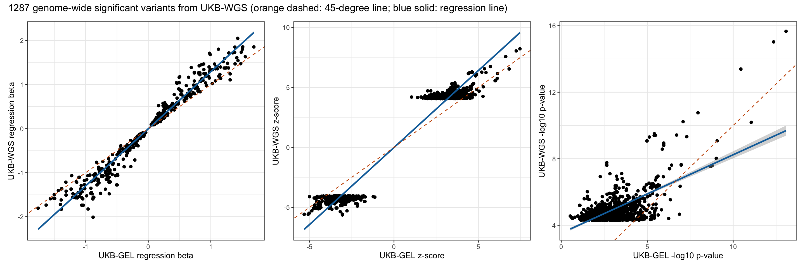
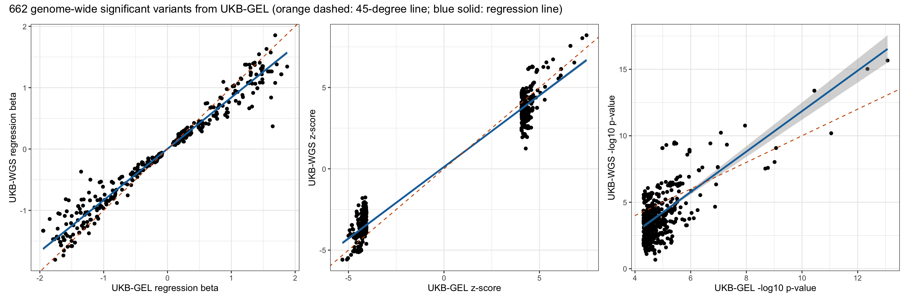
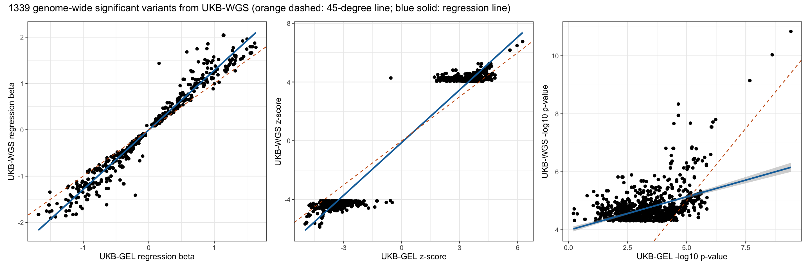
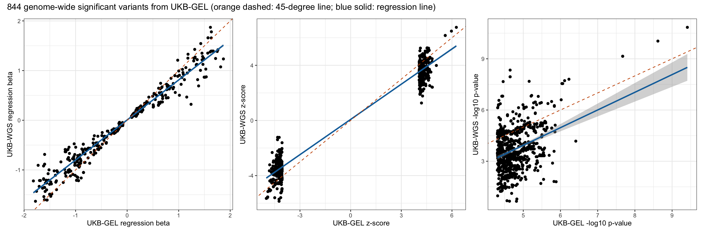

Last updated: 2025-07-27
Checks: 7 0
Knit directory: scratch/
This reproducible R Markdown analysis was created with workflowr (version 1.7.1). The Checks tab describes the reproducibility checks that were applied when the results were created. The Past versions tab lists the development history.
Great! Since the R Markdown file has been committed to the Git repository, you know the exact version of the code that produced these results.
Great job! The global environment was empty. Objects defined in the global environment can affect the analysis in your R Markdown file in unknown ways. For reproduciblity it’s best to always run the code in an empty environment.
The command set.seed(20250402) was run prior to running
the code in the R Markdown file. Setting a seed ensures that any results
that rely on randomness, e.g. subsampling or permutations, are
reproducible.
Great job! Recording the operating system, R version, and package versions is critical for reproducibility.
Nice! There were no cached chunks for this analysis, so you can be confident that you successfully produced the results during this run.
Great job! Using relative paths to the files within your workflowr project makes it easier to run your code on other machines.
Great! You are using Git for version control. Tracking code development and connecting the code version to the results is critical for reproducibility.
The results in this page were generated with repository version d36a041. See the Past versions tab to see a history of the changes made to the R Markdown and HTML files.
Note that you need to be careful to ensure that all relevant files for
the analysis have been committed to Git prior to generating the results
(you can use wflow_publish or
wflow_git_commit). workflowr only checks the R Markdown
file, but you know if there are other scripts or data files that it
depends on. Below is the status of the Git repository when the results
were generated:
Ignored files:
Ignored: .DS_Store
Ignored: .Rhistory
Ignored: .Rproj.user/
Note that any generated files, e.g. HTML, png, CSS, etc., are not included in this status report because it is ok for generated content to have uncommitted changes.
These are the previous versions of the repository in which changes were
made to the R Markdown
(analysis/compare_wgs_with_gel_b07_rep.Rmd) and HTML
(docs/compare_wgs_with_gel_b07_rep.html) files. If you’ve
configured a remote Git repository (see ?wflow_git_remote),
click on the hyperlinks in the table below to view the files as they
were in that past version.
| File | Version | Author | Date | Message |
|---|---|---|---|---|
| Rmd | d36a041 | Xiang Zhu | 2025-07-27 | compare wgs-based xiangzhu/brain2gene#14 with gel-based xiangzhu/brain2gene#2 results in replication xiangzhu/brain2gene#7 |
Number of rows in the new data frame: 21586985 Number of rows in the old data frame: 16625340 Number of genome-wide significant variants in the new GWAS: 38 Number of genome-wide significant variants in the old GWAS: 10 Number of GWAS loci in the new GWAS: 4 Number of GWAS loci in the old GWAS: 1 Relaxed genome-wide significant threshold: 4.30103 Total number of rows after joining two data frames: 16407817 Pearson correlation between new_A1FREQ in new and old_A1FREQ in old:
Estimate = 0.99989344 , 95% CI = [ 0.99989333 , 0.99989354 ]
Regression coefficients for new_A1FREQ (new ~ old):
Estimate Std. Error t value Pr(>|t|)
(Intercept) 3.179319e-05 9.861979e-07 32.23815 5.243469e-228
x 9.998071e-01 3.603671e-06 277441.30774 0.000000e+00
Pearson correlation between new_BETA in new and old_BETA in old:
Estimate = 0.77011526 , 95% CI = [ 0.76991829 , 0.77031208 ]
Regression coefficients for new_BETA (new ~ old):
Estimate Std. Error t value Pr(>|t|)
(Intercept) -0.0002235253 2.894048e-05 -7.723621 1.130769e-14
x 0.7952397139 1.626196e-04 4890.184643 0.000000e+00
Pearson correlation between new_SE in new and old_SE in old:
Estimate = 0.99365964 , 95% CI = [ 0.99365352 , 0.99366575 ]
Regression coefficients for new_SE (new ~ old):
Estimate Std. Error t value Pr(>|t|)
(Intercept) 0.001445652 5.092232e-06 283.8936 0
x 0.999261606 2.791250e-05 35799.7910 0
Pearson correlation between new_CHISQ in new and old_CHISQ in old:
Estimate = 0.62488325 , 95% CI = [ 0.62458824 , 0.62517809 ]
Regression coefficients for new_CHISQ (new ~ old):
Estimate Std. Error t value Pr(>|t|)
(Intercept) 0.3785405 0.0003377833 1120.661 0
x 0.6571502 0.0002026911 3242.126 0
Pearson correlation between new_LOG10P in new and old_LOG10P in old:
Estimate = 0.61570894 , 95% CI = [ 0.61540842 , 0.61600928 ]
Regression coefficients for new_LOG10P (new ~ old):
Estimate Std. Error t value Pr(>|t|)
(Intercept) 0.1668033 0.0001207495 1381.400 0
x 0.6405600 0.0002023814 3165.112 0
Pearson correlation between new_ZSCORE in new and old_ZSCORE in old:
Estimate = 0.78718875 , 95% CI = [ 0.78700465 , 0.78737271 ]
Regression coefficients for new_ZSCORE (new ~ old):
Estimate Std. Error t value Pr(>|t|)
(Intercept) -0.0004408587 0.0001530367 -2.880738 0.003967462
x 0.8069608037 0.0001560740 5170.371552 0.000000000Pearson correlation between new_A1FREQ in new and old_A1FREQ in old:
Estimate = 0.99997731 , 95% CI = [ 0.99997469 , 0.99997967 ]
Regression coefficients for new_A1FREQ (new ~ old):
Estimate Std. Error t value Pr(>|t|)
(Intercept) 0.0001244771 5.674322e-05 2.193691 0.0284362
x 0.9996994188 1.878506e-04 5321.780105 0.0000000
Pearson correlation between new_BETA in new and old_BETA in old:
Estimate = 0.97795839 , 95% CI = [ 0.97544162 , 0.98021983 ]
Regression coefficients for new_BETA (new ~ old):
Estimate Std. Error t value Pr(>|t|)
(Intercept) -0.004135108 0.003610021 -1.145453 0.2522349
x 1.295298271 0.007714860 167.896542 0.0000000
Pearson correlation between new_SE in new and old_SE in old:
Estimate = 0.99598003 , 95% CI = [ 0.99551636 , 0.99639584 ]
Regression coefficients for new_SE (new ~ old):
Estimate Std. Error t value Pr(>|t|)
(Intercept) 0.0003175667 0.0003599901 0.8821542 0.3778584
x 1.0092901415 0.0025322302 398.5775588 0.0000000
Pearson correlation between new_CHISQ in new and old_CHISQ in old:
Estimate = 0.65785315 , 95% CI = [ 0.62570244 , 0.68777261 ]
Regression coefficients for new_CHISQ (new ~ old):
Estimate Std. Error t value Pr(>|t|)
(Intercept) 13.8823182 0.2006090 69.20086 0.000000e+00
x 0.4923485 0.0157243 31.31131 2.083246e-160
Pearson correlation between new_LOG10P in new and old_LOG10P in old:
Estimate = 0.65004855 , 95% CI = [ 0.61733375 , 0.68051898 ]
Regression coefficients for new_LOG10P (new ~ old):
Estimate Std. Error t value Pr(>|t|)
(Intercept) 3.5240211 0.05208030 67.66515 0.000000e+00
x 0.4716183 0.01537962 30.66515 1.998274e-155
Pearson correlation between new_ZSCORE in new and old_ZSCORE in old:
Estimate = 0.98051389 , 95% CI = [ 0.97828571 , 0.98251545 ]
Regression coefficients for new_ZSCORE (new ~ old):
Estimate Std. Error t value Pr(>|t|)
(Intercept) -0.01954695 0.024209922 -0.807394 0.4195889
x 1.28325051 0.007172287 178.917906 0.0000000Pearson correlation between new_A1FREQ in new and old_A1FREQ in old:
Estimate = 0.99982782 , 95% CI = [ 0.99979942 , 0.9998522 ]
Regression coefficients for new_A1FREQ (new ~ old):
Estimate Std. Error t value Pr(>|t|)
(Intercept) -2.114731e-05 0.0001794823 -0.1178239 0.906243
x 1.001463e+00 0.0007234817 1384.2273461 0.000000
Pearson correlation between new_BETA in new and old_BETA in old:
Estimate = 0.98147327 , 95% CI = [ 0.97844977 , 0.98407598 ]
Regression coefficients for new_BETA (new ~ old):
Estimate Std. Error t value Pr(>|t|)
(Intercept) 0.003407343 0.005066001 0.6725903 0.5014434
x 0.836498866 0.006356359 131.6003105 0.0000000
Pearson correlation between new_SE in new and old_SE in old:
Estimate = 0.99529023 , 95% CI = [ 0.99451537 , 0.99595584 ]
Regression coefficients for new_SE (new ~ old):
Estimate Std. Error t value Pr(>|t|)
(Intercept) 0.0001223709 0.0007212284 0.1696701 0.8653216
x 1.0215265898 0.0038728526 263.7659354 0.0000000
Pearson correlation between new_CHISQ in new and old_CHISQ in old:
Estimate = 0.68867345 , 95% CI = [ 0.64639344 , 0.7267372 ]
Regression coefficients for new_CHISQ (new ~ old):
Estimate Std. Error t value Pr(>|t|)
(Intercept) -13.262957 1.19510417 -11.09774 2.339418e-26
x 1.514079 0.06205036 24.40082 3.196472e-94
Pearson correlation between new_LOG10P in new and old_LOG10P in old:
Estimate = 0.68266292 , 95% CI = [ 0.63974078 , 0.72134026 ]
Regression coefficients for new_LOG10P (new ~ old):
Estimate Std. Error t value Pr(>|t|)
(Intercept) -3.364929 0.31257717 -10.76512 5.213089e-25
x 1.521788 0.06340664 24.00045 5.469809e-92
Pearson correlation between new_ZSCORE in new and old_ZSCORE in old:
Estimate = 0.97940984 , 95% CI = [ 0.97605367 , 0.98229984 ]
Regression coefficients for new_ZSCORE (new ~ old):
Estimate Std. Error t value Pr(>|t|)
(Intercept) 0.1168650 0.030697429 3.806997 0.0001537638
x 0.8799649 0.007060357 124.634623 0.0000000000 UKB-WGS p < 5e-8 UKB-WGS p >= 5e-8
UKB-GEL p < 5e-8 219 443
UKB-GEL p >= 5e-8 1068 16406087
Fisher's Exact Test for Count Data
data: contingency_table
p-value < 2.2e-16
alternative hypothesis: true odds ratio is not equal to 1
95 percent confidence interval:
4201.026 16384.000
sample estimates:
odds ratio
6120.405 
Number of rows in the new data frame: 21732812 Number of rows in the old data frame: 16725747 Number of genome-wide significant variants in the new GWAS: 14 Number of genome-wide significant variants in the old GWAS: 4 Number of GWAS loci in the new GWAS: 3 Number of GWAS loci in the old GWAS: 1 Relaxed genome-wide significant threshold: 4.30103 Total number of rows after joining two data frames: 16504485 Pearson correlation between new_A1FREQ in new and old_A1FREQ in old:
Estimate = 0.99989236 , 95% CI = [ 0.99989225 , 0.99989246 ]
Regression coefficients for new_A1FREQ (new ~ old):
Estimate Std. Error t value Pr(>|t|)
(Intercept) 3.216491e-05 9.856595e-07 32.63289 1.426017e-233
x 9.998002e-01 3.611235e-06 276858.23814 0.000000e+00
Pearson correlation between new_BETA in new and old_BETA in old:
Estimate = 0.77994402 , 95% CI = [ 0.77975498 , 0.78013292 ]
Regression coefficients for new_BETA (new ~ old):
Estimate Std. Error t value Pr(>|t|)
(Intercept) -0.0002066154 2.862968e-05 -7.216824 5.321807e-13
x 0.7926638499 1.565649e-04 5062.845058 0.000000e+00
Pearson correlation between new_SE in new and old_SE in old:
Estimate = 0.99366995 , 95% CI = [ 0.99366386 , 0.99367604 ]
Regression coefficients for new_SE (new ~ old):
Estimate Std. Error t value Pr(>|t|)
(Intercept) 0.001404227 5.137740e-06 273.3162 0
x 0.990250400 2.755701e-05 35934.6096 0
Pearson correlation between new_CHISQ in new and old_CHISQ in old:
Estimate = 0.63771137 , 95% CI = [ 0.63742503 , 0.63799753 ]
Regression coefficients for new_CHISQ (new ~ old):
Estimate Std. Error t value Pr(>|t|)
(Intercept) 0.3618370 0.0003316405 1091.052 0
x 0.6622876 0.0001969099 3363.404 0
Pearson correlation between new_LOG10P in new and old_LOG10P in old:
Estimate = 0.62977123 , 95% CI = [ 0.62948004 , 0.63006224 ]
Regression coefficients for new_LOG10P (new ~ old):
Estimate Std. Error t value Pr(>|t|)
(Intercept) 0.1597378 0.0001184192 1348.918 0
x 0.6485523 0.0001969063 3293.710 0
Pearson correlation between new_ZSCORE in new and old_ZSCORE in old:
Estimate = 0.79738878 , 95% CI = [ 0.79721302 , 0.7975644 ]
Regression coefficients for new_ZSCORE (new ~ old):
Estimate Std. Error t value Pr(>|t|)
(Intercept) -0.0003075685 0.0001489467 -2.064957 0.03892706
x 0.8110766638 0.0001510927 5368.071875 0.00000000Pearson correlation between new_A1FREQ in new and old_A1FREQ in old:
Estimate = 0.99952265 , 95% CI = [ 0.99946863 , 0.99957119 ]
Regression coefficients for new_A1FREQ (new ~ old):
Estimate Std. Error t value Pr(>|t|)
(Intercept) 0.000570357 0.0003238935 1.76094 0.07847712
x 0.999151661 0.0008446028 1182.98414 0.00000000
Pearson correlation between new_BETA in new and old_BETA in old:
Estimate = 0.97911342 , 95% CI = [ 0.97677639 , 0.98121751 ]
Regression coefficients for new_BETA (new ~ old):
Estimate Std. Error t value Pr(>|t|)
(Intercept) -0.002695651 0.003646563 -0.7392307 0.4598967
x 1.285230057 0.007298795 176.0879871 0.0000000
Pearson correlation between new_SE in new and old_SE in old:
Estimate = 0.99271166 , 95% CI = [ 0.99188992 , 0.99345042 ]
Regression coefficients for new_SE (new ~ old):
Estimate Std. Error t value Pr(>|t|)
(Intercept) 0.002375536 0.0004951504 4.797605 1.785897e-06
x 0.975851280 0.0032398973 301.198213 0.000000e+00
Pearson correlation between new_CHISQ in new and old_CHISQ in old:
Estimate = 0.44011966 , 95% CI = [ 0.39588273 , 0.48231863 ]
Regression coefficients for new_CHISQ (new ~ old):
Estimate Std. Error t value Pr(>|t|)
(Intercept) 15.466117 0.18063536 85.62065 0.000000e+00
x 0.241575 0.01347915 17.92213 1.531043e-64
Pearson correlation between new_LOG10P in new and old_LOG10P in old:
Estimate = 0.43334391 , 95% CI = [ 0.38879883 , 0.47586771 ]
Regression coefficients for new_LOG10P (new ~ old):
Estimate Std. Error t value Pr(>|t|)
(Intercept) 3.9867690 0.04673464 85.30651 0.000000e+00
x 0.2305023 0.01311027 17.58180 2.065107e-62
Pearson correlation between new_ZSCORE in new and old_ZSCORE in old:
Estimate = 0.98545993 , 95% CI = [ 0.98382721 , 0.9869289 ]
Regression coefficients for new_ZSCORE (new ~ old):
Estimate Std. Error t value Pr(>|t|)
(Intercept) -0.1178476 0.020033309 -5.882585 5.097566e-09
x 1.1959748 0.005639377 212.075680 0.000000e+00Pearson correlation between new_A1FREQ in new and old_A1FREQ in old:
Estimate = 0.99998336 , 95% CI = [ 0.99998095 , 0.99998546 ]
Regression coefficients for new_A1FREQ (new ~ old):
Estimate Std. Error t value Pr(>|t|)
(Intercept) 0.0001861842 6.339218e-05 2.937022 0.003404127
x 0.9995709026 1.987303e-04 5029.785392 0.000000000
Pearson correlation between new_BETA in new and old_BETA in old:
Estimate = 0.977362 , 95% CI = [ 0.97412796 , 0.98019584 ]
Regression coefficients for new_BETA (new ~ old):
Estimate Std. Error t value Pr(>|t|)
(Intercept) 0.005846791 0.004332181 1.349618 0.1775012
x 0.805645180 0.006010276 134.044621 0.0000000
Pearson correlation between new_SE in new and old_SE in old:
Estimate = 0.99340645 , 95% CI = [ 0.99245576 , 0.99423769 ]
Regression coefficients for new_SE (new ~ old):
Estimate Std. Error t value Pr(>|t|)
(Intercept) 9.745162e-05 0.000664141 0.1467333 0.8833776
x 9.981088e-01 0.003969652 251.4348175 0.0000000
Pearson correlation between new_CHISQ in new and old_CHISQ in old:
Estimate = 0.38394325 , 95% CI = [ 0.32487838 , 0.44002474 ]
Regression coefficients for new_CHISQ (new ~ old):
Estimate Std. Error t value Pr(>|t|)
(Intercept) -5.140519 1.61070943 -3.191462 1.468031e-03
x 1.027154 0.08512989 12.065729 4.932668e-31
Pearson correlation between new_LOG10P in new and old_LOG10P in old:
Estimate = 0.38007695 , 95% CI = [ 0.32082332 , 0.43636706 ]
Regression coefficients for new_LOG10P (new ~ old):
Estimate Std. Error t value Pr(>|t|)
(Intercept) -1.245876 0.42216643 -2.95115 3.253764e-03
x 1.035470 0.08684213 11.92359 2.136906e-30
Pearson correlation between new_ZSCORE in new and old_ZSCORE in old:
Estimate = 0.98232549 , 95% CI = [ 0.97979328 , 0.98454285 ]
Regression coefficients for new_ZSCORE (new ~ old):
Estimate Std. Error t value Pr(>|t|)
(Intercept) 0.07632952 0.024249852 3.147628 0.001703973
x 0.85162567 0.005592403 152.282609 0.000000000 UKB-WGS p < 5e-8 UKB-WGS p >= 5e-8
UKB-GEL p < 5e-8 266 578
UKB-GEL p >= 5e-8 1073 16502568
Fisher's Exact Test for Count Data
data: contingency_table
p-value < 2.2e-16
alternative hypothesis: true odds ratio is not equal to 1
95 percent confidence interval:
4201.026 8192.000
sample estimates:
odds ratio
5980.525 
R version 4.5.1 (2025-06-13)
Platform: aarch64-apple-darwin20
Running under: macOS Sequoia 15.5
Matrix products: default
BLAS: /Library/Frameworks/R.framework/Versions/4.5-arm64/Resources/lib/libRblas.0.dylib
LAPACK: /Library/Frameworks/R.framework/Versions/4.5-arm64/Resources/lib/libRlapack.dylib; LAPACK version 3.12.1
locale:
[1] en_US.UTF-8/en_US.UTF-8/en_US.UTF-8/C/en_US.UTF-8/en_US.UTF-8
time zone: America/Los_Angeles
tzcode source: internal
attached base packages:
[1] stats graphics grDevices utils datasets methods base
other attached packages:
[1] xzTools_0.0.0.9000 patchwork_1.3.1 ggplot2_3.5.2 dplyr_1.1.4
[5] data.table_1.17.8 workflowr_1.7.1
loaded via a namespace (and not attached):
[1] sass_0.4.10 generics_0.1.4 lattice_0.22-7 stringi_1.8.7
[5] digest_0.6.37 magrittr_2.0.3 evaluate_1.0.4 grid_4.5.1
[9] RColorBrewer_1.1-3 fastmap_1.2.0 Matrix_1.7-3 R.oo_1.27.1
[13] rprojroot_2.0.4 jsonlite_2.0.0 processx_3.8.6 R.utils_2.13.0
[17] whisker_0.4.1 ps_1.9.1 promises_1.3.3 httr_1.4.7
[21] mgcv_1.9-3 scales_1.4.0 jquerylib_0.1.4 cli_3.6.5
[25] rlang_1.1.6 R.methodsS3_1.8.2 splines_4.5.1 withr_3.0.2
[29] cachem_1.1.0 yaml_2.3.10 tools_4.5.1 httpuv_1.6.16
[33] vctrs_0.6.5 R6_2.6.1 lifecycle_1.0.4 git2r_0.36.2
[37] stringr_1.5.1 fs_1.6.6 pkgconfig_2.0.3 callr_3.7.6
[41] pillar_1.11.0 bslib_0.9.0 later_1.4.2 gtable_0.3.6
[45] glue_1.8.0 Rcpp_1.1.0 xfun_0.52 tibble_3.3.0
[49] tidyselect_1.2.1 rstudioapi_0.17.1 knitr_1.50 farver_2.1.2
[53] nlme_3.1-168 htmltools_0.5.8.1 labeling_0.4.3 rmarkdown_2.29
[57] compiler_4.5.1 getPass_0.2-4